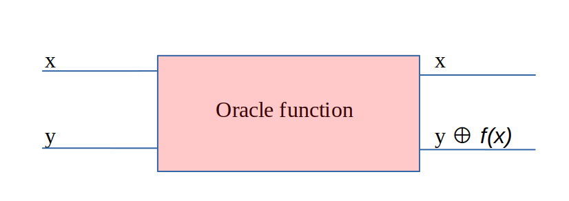
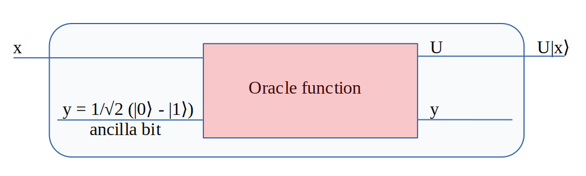
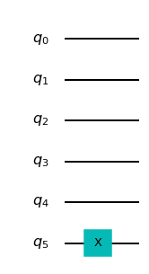
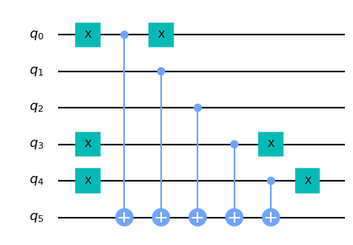
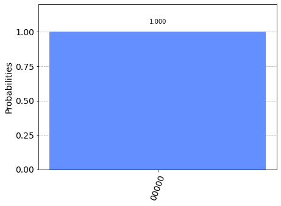
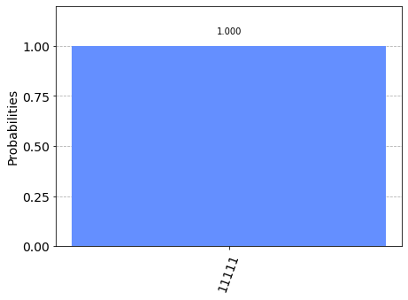

Analizziamo quindi il Deutsch-Jozsa algorithm che permette di individuare con un solo tentativo se una funzione è balanced o constant.
Nei computer tradizionali per essere sicuri che la function sia balanced o costant occorrono eseguire 2n-1 +1 tentativi per avere la certezza matematica mentre con il quantum computer basta un sola esecuzione della oracle function pre determinare il tipo di function.
Nei computer tradizionale la Oracle function è una funzione invisibile 'black box' alla quale si inseriscono in
input {0,1}n e si ha in output {0,1}m
Nell'immagine sottostante viene rappresentato una Oracle function con n qubits in x e m qubits in output che è la base di partenza per poi costruire una function da inserire nel d.j. algorithm.
input {0,1}n e si ha in output {0,1}m
Nell'immagine sottostante viene rappresentato una Oracle function con n qubits in x e m qubits in output che è la base di partenza per poi costruire una function da inserire nel d.j. algorithm.

Nell'immagine sottostante si rappresenta come costruire una function che nel quantum computing ci permette di inserire
in input {0,1}n ed in output ottenere {0,1}. In questa function la y in ingresso ed uscita sono dati che
non vengono riutilizzati e soprattutto notare che la y in input è un ancilla bit ed è indipendente dagli altri qubits.

Nell'immagine sottostante si rappresenta diviso in diverse fasi, F1, F2 e F3 le operazioni che si
effettuano per creare questo algoritmo. Iniziamo con la F1 dove a tutti i qubits viene applicato il gate H
e si inserisce un qubit aggiuntivo dal valore di |1⟩ a cui si applica il gate H.
La F2 è composta dalla Oracle function che riceve in input i qubits indicati e restituisce altrettanti qubits. Nella F3 su tutti i qubits ricevuti dalla Oracle function viene applicato un gate H. Infine si esegue la misurazione per determinare il valore dei qubits.

La F2 è composta dalla Oracle function che riceve in input i qubits indicati e restituisce altrettanti qubits. Nella F3 su tutti i qubits ricevuti dalla Oracle function viene applicato un gate H. Infine si esegue la misurazione per determinare il valore dei qubits.
Qui invece vediamo una rappresentazione grafica del circuito realizzato con qiskit seguendo le indicazioni del grafico a lato.
Anche qui possiamo notare le 3 fasi descritte sempre a lato.

Questa è la rappresentazione grafica della oracle function constant.

Qui invece la rappresentazione grafica della oracle function balanced.

Esito della simulazione con costant function

Esito della simulazione con balanced function

Non resta che analizzare il programma pre realizzare questo algoritmo com qiskit.
import numpy as np
import pylatexenc
from qiskit import QuantumCircuit, execute
from qiskit.visualization import plot_histogram
######## F2 ##########
def creaOracle(tp, n):
# creazione circuito per l'oracle, oggetto con n+1 qubits, qubits input + 1 qubit output
oracircuit = QuantumCircuit(n+1)
if tp == "balanced":
bstr = np.random.randint(1,2**n)
b_str = format(bstr, '0'+str(n)+'b')
for qubit in range(len(b_str)):
if b_str[qubit] == '1':
oracircuit.x(qubit)
for qubit in range(n):
oracircuit.cx(qubit, n)
for qubit in range(len(b_str)):
if b_str[qubit] == '1':
oracircuit.x(qubit)
if tp == "constant":
output = np.random.randint(2)
if output == 1:
oracircuit.x(n)
oraclegate = oracircuit.to_gate()
oraclegate.name = "Oracle function"
return oraclegate,oracircuit
def creaAlgoritmo(oracle, n):
circuit = QuantumCircuit(n+1, n)
###### FASE 1 F1 ######
circuit.x(n)
circuit.h(n)
for qubit in range(n):
circuit.h(qubit)
###### FASE 2 F2 ######
circuit.append(oracle, range(n+1))
###### FASE 3 F3 ######
for qubit in range(n):
circuit.h(qubit)
for i in range(n):
circuit.measure(i, i)
return circuit
n = 5
#oraclegate,oracircuit = creaOracle('constant', n)
oraclegate,oracircuit = creaOracle('balanced', n)
circuit = creaAlgoritmo(oraclegate, n)
#circuit.draw(output='mpl')
backend = BasicAer.get_backend('qasm_simulator')
results = execute(circuit, backend=backend, shots=1024).result()
risultato = results.get_counts()
plot_histogram(risultato)
#circuit.draw(output='mpl')
#oracircuit.draw(output='mpl')